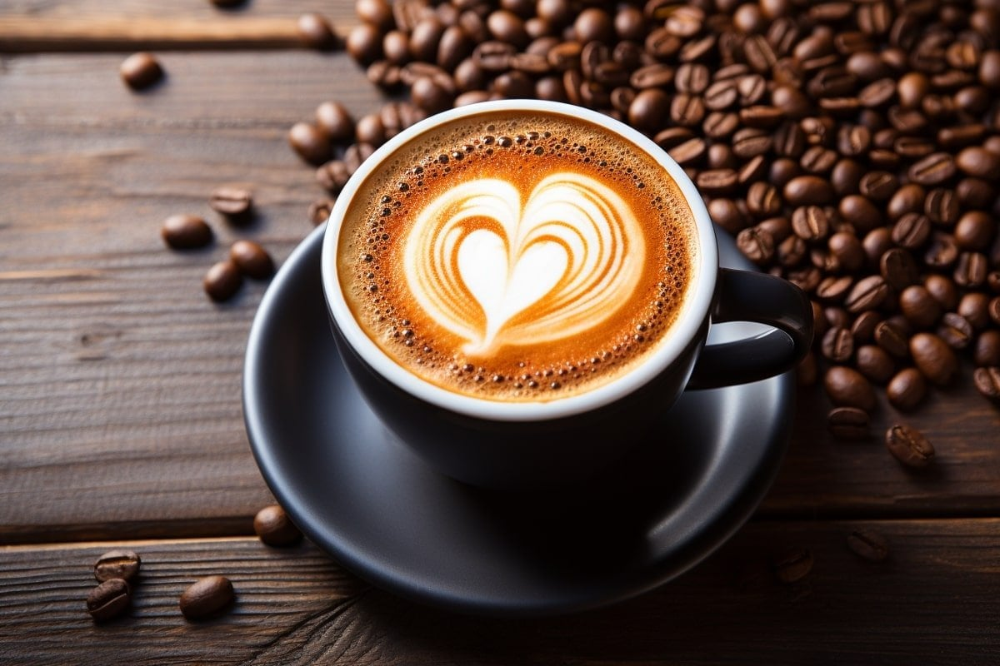

Мир велосипедов
Велосипед — это не просто средство передвижения, это свобода на двух колесах. Ветер в волосах, пейзаж, мелькающий перед глазами, и ощущение легкости под колесами создают неповторимый опыт, который объединяет людей в любом возрасте. Велосипед стал неотъемлемой частью активного образа жизни. Это не только способ поддерживать физическую форму, но и прекрасная возможность насладиться окружающей природой. Велопрогулки в парке, городские пробки, велосипедные трассы в горах — в каждом случае велосипед становится компаньоном, готовым подарить своеобразное удовлетворение от передвижения. Велосипеды бывают разные, как и их владельцы. Горные велосипеды для тех, кто ищет приключения в неисследованных тропах природы, шоссейные — для любителей скорости и долгих дистанций, городские — для удобства и стиля в городской среде. В каждом велосипеде есть что-то особенное, что соответствует индивидуальным потребностям и вкусам. И, конечно, велосипед — это не только средство, но и объект страсти. Это хобби, которое приносит удовлетворение от заботы о своем двухколесном друге, настройки и улучшения техники, а также участия в велосипедных мероприятиях и соревнованиях. Велосипед — это не просто транспортное средство, это образ жизни, способ передвижения и источник удовольствия, который поддерживает наше здоровье и привносит радость в повседневную рутину.

Путешествия для души
Путешествия — это исследование мира вокруг, погружение в разнообразие культур, встречи с новыми людьми и открытие невиданных горизонтов. Это приключение, которое развивает наши глаза, ум, и душу. Каждое путешествие — это возможность выйти за пределы зоны комфорта и познакомиться с разнообразием природы и архитектуры, насладиться новыми вкусами и запахами, а также понять, что мир на самом деле невероятно разнообразен и удивителен. Путешествия могут быть разнообразными: от отдыха на пляже до приключенческих экспедиций в отдаленные уголки планеты. Новые города, их история и атмосфера создают уникальные воспоминания, а знакомства с местными жителями придают путешествию особый колорит. Фотографии и воспоминания, привезенные из поездок, становятся неотъемлемой частью нашей жизни, напоминая о приключениях и вдохновляя на новые планы. Путешествия расширяют наше видение мира, обогащают кругозор и формируют наш характер. Путешествия — это не только физическое перемещение, но и духовное обогащение. Они учат терпению, толерантности, и открывают возможность видеть красоту в простых вещах. В конце концов, путешествие начинается с желания открыть для себя что-то новое, и заканчивается поиском баланса между поиском приключений и нахождением дома в самом себе.

Магия кофеина
Кофе — это не просто напиток, это настоящий ритуал, который сопровождает нас в самых разных моментах жизни. Аромат свежемолотого кофе наполняет утро энергией и пробуждает все чувства. Это нечто большее, чем просто жидкость: это искусство, заботливо варенное каждым бариста, в каждом заведении, создающем свой неповторимый почерк в каждой чашке. Чашка горячего кофе — это как встреча с старым другом, нежный разговор с самим собой или возможность поделиться моментом с близкими. Этот напиток способен пробудить в нас креативность, усилить концентрацию и даже подарить немного уюта в серых буднях. От эспрессо, напоминающего о силе и решимости, до латте, обволакивающего своей мягкостью — мир кофе так же разнообразен, как и вкусы людей. Именно в этом разнообразии мы находим свой идеальный выбор, отражающий наше настроение и вкусовые предпочтения. Кофе — это неотъемлемая часть культуры многих стран, символ собраний, бесед, идейных дискуссий. В чашке кофе скрыта целая история, от засушливых плантаций до уютных кафе на углах улиц. Так что, взгляните на свою чашку кофе не просто как на напиток, а как на маленькое приключение, которое приносит в вашу жизнь тепло, аромат и удовольствие.
| Сорт | Описание | Рейтинг |
|---|---|---|
| Арабика | Изысканный вкус с легкой кислинкой | 4.5 |
| Робуста | Крепкий вкус с насыщенным ароматом | 4.0 |